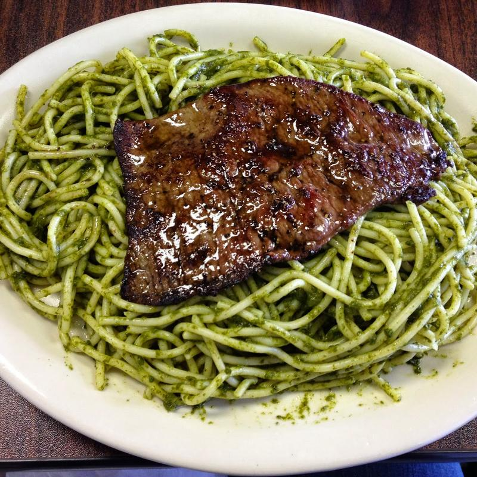

Fideos Verdes con Bistec Apanado

Ingredientes
- 250 g de fideos
- 1 bistec de res
- 1 taza de hojas de albahaca
- 1 taza de espinacas
- 100 g de queso fresco
- 1/2 taza de leche evaporada
- 1 diente de ajo
- 1/4 de cebolla
- Pan rallado
- 1 huevo
- Harina
- Sal y pimienta al gusto
- Aceite para freír
Preparación
- Cocina los fideos en agua hirviendo con sal
siguiendo las instrucciones del paquete.
- Licúa la albahaca, las espinacas, el queso fresco,
la leche evaporada, el ajo y la cebolla hasta
obtener una salsa verde.
- Calienta la salsa en una sartén y mezcla con los
fideos cocidos.
- Sazona el bistec con sal y pimienta.
- Pasa el bistec por harina, huevo batido y pan
rallado para apanarlo.
- Fríe el bistec en aceite caliente hasta que esté
dorado y completamente cocido.
- Sirve los fideos verdes acompañados del bistec
apanado.
Conoce más sobre la historia de la pasta